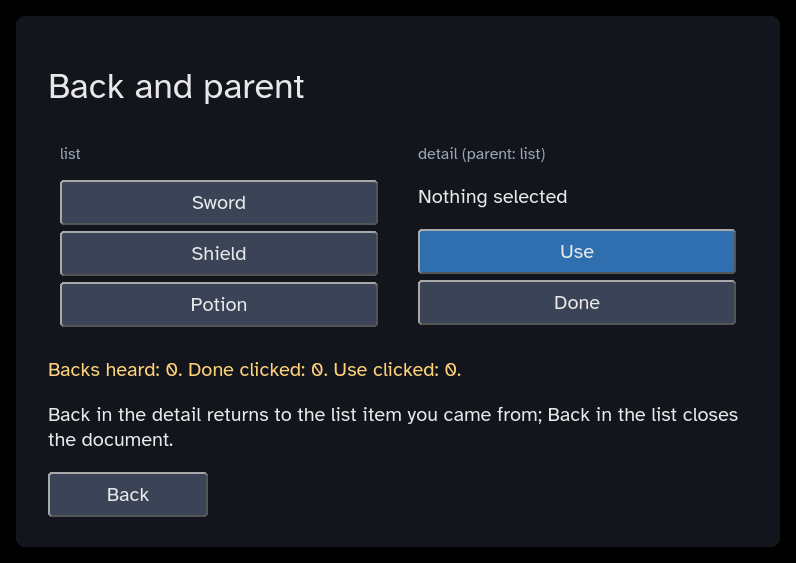

Navigation¶
Use this page when a screen has more than one button or region and arrows or the D-pad must move between them predictably.
Arrows and the D-pad move focus between the elements of a menu. A document with several regions groups them in
focus areas, so the focus stays in a region until it is told to leave. Three samples show it: FocusAreas, BackAndParent
and TabBar. The keys and the project's input setup are in Input and gamepad. Run one by choosing
it in the samples list in the map L_ArcRmlSamples (Samples). The attribute details are on
Navigation reference.
In short¶
- An arrow moves focus to the nearest item in the same
data-focus-area; at the area's edge it leaves to another area. data-focus-primaryandautofocusdecide where focus starts; a non-form element needstab-index: auto; nav: autoto take an arrow.data-focus-containkeeps focus inside a popup;navnotargetreports an arrow that found no target in its area, before focus leaves it.- Back in a child area returns to its parent area (
data-focus-parent) before the document closes. data-hotkey-cyclesteps a tab bar anddata-focus-requestmoves focus from the view model.
How focus works¶
One screen of the FocusAreas sample shows how the attributes combine. It has the areas left, middle and right
and a popup with the areas popup-a and popup-b:
middlehasdata-focus-primary, so the document opens there, on itsautofocusbutton (Middle 1).- An arrow moves between the buttons of
middle. At its edge, Left moves to the nearest item ofleft: that is a leave. - Inside the popup,
data-focus-containlimits a leave topopup-aandpopup-b; no arrow gets out. - When an arrow finds no target in its area, the focused element gets
navnotargetbefore focus leaves the area. A handler that stops it cancels the leave (the button "Right 2" does it for Down).
| Attribute or event | Role | Section |
|---|---|---|
data-focus-area, data-focus-primary |
Group elements; the area that gets focus first | Focus areas |
nav-<dir> |
Lets an arrow leave an element's area | Leaving an area |
data-nav-<dir>, data-focus-down |
Take an arrow before the spatial search | Redirecting an arrow |
data-focus-contain |
One container of areas that focus never leaves | Containing focus |
navnotarget |
An arrow found no target in its area; stopping it cancels the leave | navnotarget |
data-focus-parent, data-focus-exit |
Back returns to a parent area | Back and the parent area |
data-focus-enter |
A tab click sends focus into an area | Tab bar |
data-focus-request |
The view model moves focus to an element | Focus requests |
data-focus-owner |
Marks the container of a popup and its trigger; on blur, ev.related_in_owner is true when focus moves to an element inside that container (Event reference) |
Attributes |
Navigation reference gives each rule in full; the tutorial below builds one screen.
Tutorial: a list and a detail¶
The BackAndParent sample is one screen with two areas: list (Sword, Shield, Potion) and detail (Use, Done). The steps
below build it. Each step names the rule it uses; the full rule is in
Navigation reference.
1. Mark the areas¶
data-focus-area="<name>" makes an element one area: an arrow inside it picks only targets in the same area.
data-focus-primary on list makes it the area that gets focus first, and autofocus on "Sword" is where it lands
(Focus areas).
<div class="bp-area" data-focus-area="list" data-focus-primary="">
<button id="bp-sword" class="bp-item" autofocus="" data-event-click="call('', 'Select', 'Sword')">Sword</button>
</div>
<div class="bp-area" data-focus-area="detail" data-focus-parent="list" data-focus-exit="#bp-done">
<button id="bp-use" class="bp-item" data-event-click="call('', 'Use')">Use</button>
<button id="bp-done" class="bp-item" data-event-click="call('', 'Exit')">Done</button>
</div>
A <button> is a navigation stop by default. The list also holds the buttons "Shield" and "Potion", written like "Sword". data-focus-parent and data-focus-exit on detail are step 3.
2. Move between the areas¶
Up and Down move between the buttons of list. Right from a list item is at the edge of list, so focus leaves to the
nearest item of detail. A button may leave in any direction because it has nav: auto from the default style
sheet (Leaving an area).

3. Go back¶
Back (Esc or gamepad B, see Events) is the key or pad button that closes a menu. Two attributes on detail give it a
way back:
data-focus-parent="list": Back indetailreturns focus to thelistitem that the arrow left from. The item is remembered only when focus entereddetailby a leave fromlist.data-focus-exit="#bp-done": when Back leavesdetail, the first match of the selector is clicked, soExitruns. A direct click on "Done" runsExittoo but does not leave the area.
Back in list, which has no parent, goes on to <body> and closes the document when no handler stops it. The sample's
<body data-event-back="call('', 'CountBack')"> hears every Back that is not a return to a parent area. It does not call
stopPropagation(), so a Back in list still closes the document. The order of one Back is in
Back and the parent area.
4. Back from a button¶
The sample's "Back" button lies outside every area. Its click calls PressBack in the view model, which posts the same
Back as the key with PostBack, so it closes the document
(Back from game code).
5. Run it¶
Play in the map L_ArcRmlSamples and choose BackAndParent in the samples list. Right moves focus from "Sword"
to "Use" in detail; press Back (Esc or gamepad B) to return to the list, press Back again to close the document. The counters on the screen
show the backs heard and the clicks on "Done" and "Use". ArcRmlSamples.Close closes the document.
Not in this sample: containing focus and navnotarget (FocusAreas),
redirecting an arrow, the
tab bar (TabBar) and focus requests
(FocusRequest).